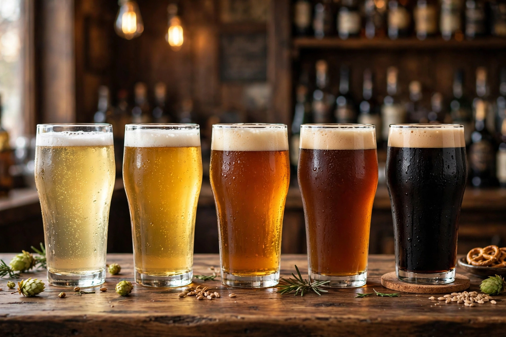

Beer style

Beer style is a term used to differentiate and categorise beers by colour, flavour, strength, ingredients, production method, recipe and origin. The modern concept derives largely from the work of writer Michael Jackson, whose 1977 book The World Guide to Beer organised beers into style groups; style guidelines are now maintained by organisations such as the Beer Judge Certification Program (BJCP) and the Brewers Association for use in competitions.
| Main division | Ale (top-fermenting) vs lager (bottom-fermenting) |
|---|---|
| Key parameters | Colour (SRM/EBC), bitterness (IBU), alcohol (ABV), original gravity |
| Guideline bodies | BJCP, Brewers Association, CAMRA |
Basis of styles
Styles arise from local combinations of water chemistry, available grains, hop varieties and yeast behaviour, codified by law or custom — for example, Bavarian wheat beers, Burton-on-Trent pale ales, and the spontaneously fermented lambics of Belgium's Senne valley. The broadest split is between ales, fermented warm with Saccharomyces cerevisiae, and lagers, fermented cold with S. pastorianus and then stored.
Common style families
- Pale lagers and pilsners — pale, crisp, moderately bitter (Helles, Pilsner, Dortmunder).
- Dark lagers — Dunkel, Schwarzbier, and strong doppelbocks.
- Pale ales — English bitter, American pale ale and India pale ale (IPA), including hazy/New England and double variants.
- Brown and dark ales — mild, brown ale, porter and stout, including imperial stout.
- Wheat beers — German Weissbier, Belgian witbier, American wheat.
- Sour and wild beers — lambic, gueuze, Flanders red ale, Berliner Weisse, gose.
- Strong and specialty ales — barley wine, Belgian tripel and quadrupel, saison, bière de garde.
Style guidelines
The BJCP guidelines (2021 edition) define over 120 styles with target ranges for gravity, alcohol, bitterness and colour plus descriptions of aroma, flavour and mouthfeel. Critics note that styles are a modern, largely Anglophone framework imposed on older brewing traditions, but they remain the working vocabulary of brewers, judges and drinkers.